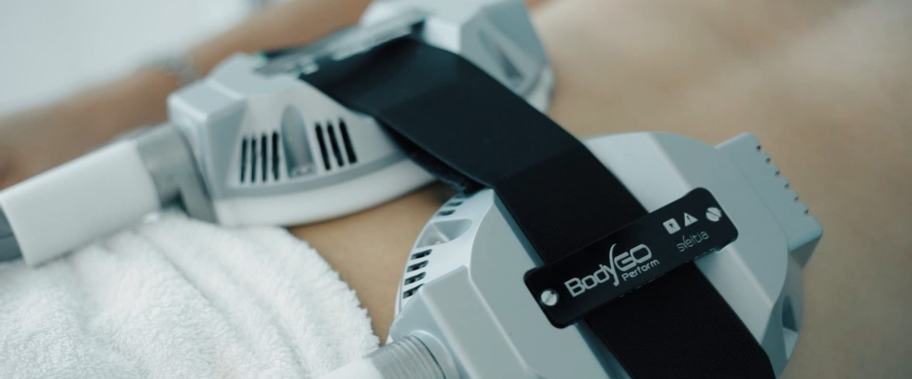
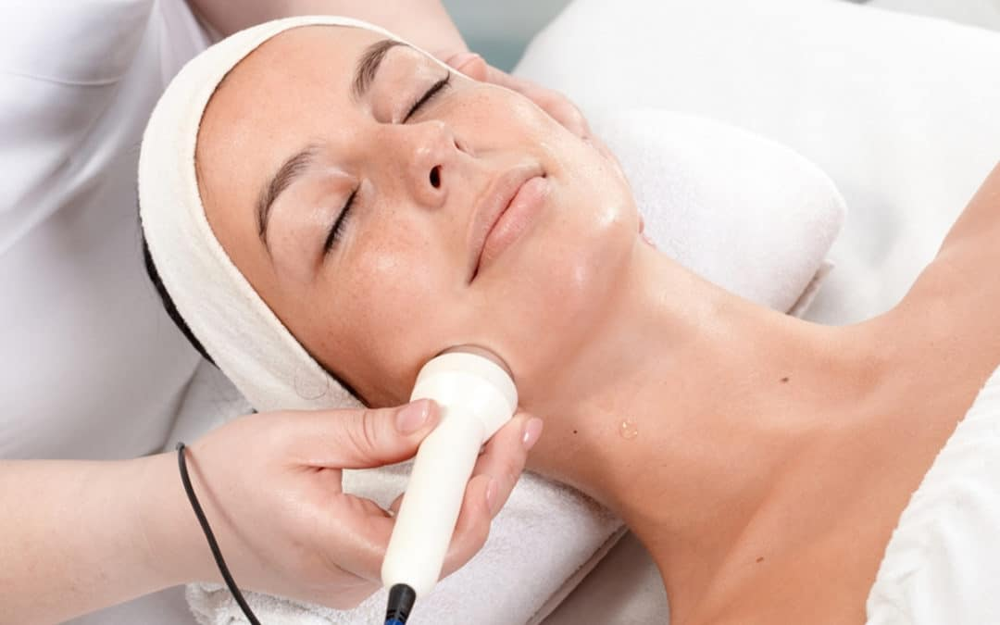
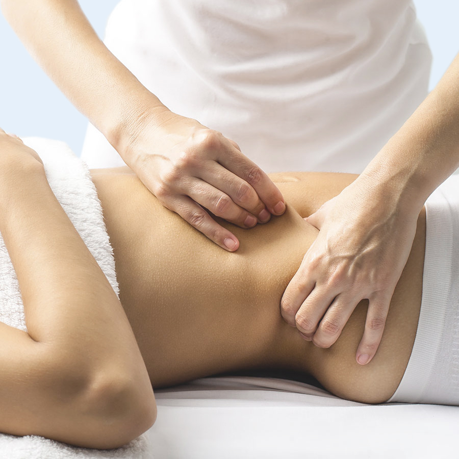
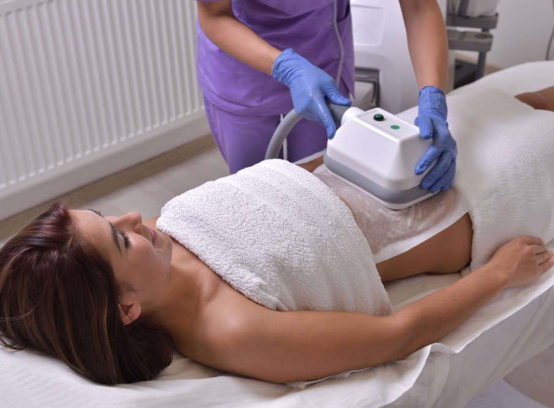

BODY GO
PARA REAFIRMAR Y TONIFICAR
Si buscás reafirmar alguna parte de tu cuerpo, #BodyGo Perform es para vos. Fortalece y aumenta la masa muscular, mejora la irrigación sanguínea, reduce adiposidades localizadas y tonifica. ¡Siempre y cuando acompañes con un entrenamiento diario!.
Adquirir

RADIOFRACUENCIA
PARA PIELES QUE PERDIERON ELASTICIDAD
Si lo que querés es darle firmeza a tu piel, la #Radiofrecuencia es lo ideal. Las ondas de radio estimulan la producción de colágeno y elástina, ya sea en el rostro o en el cuerpo.
Adquirir

DRENAJE LINFÁTICO
PARA MEJORAR LA CELULITIS
Si buscás mejorar la #celulitis, el #DrenajeLinfático es una excelente opción. Mejora la circulación sanguínea y linfática, mejora el aspecto de la piel y es ideal para piernas cansadas o adormecidas, arañitas y edemas.
Adquirir
